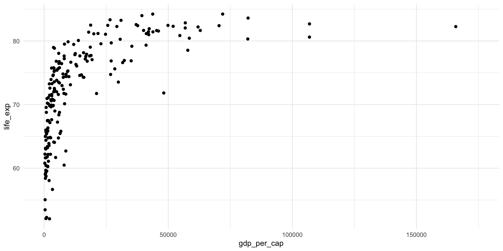
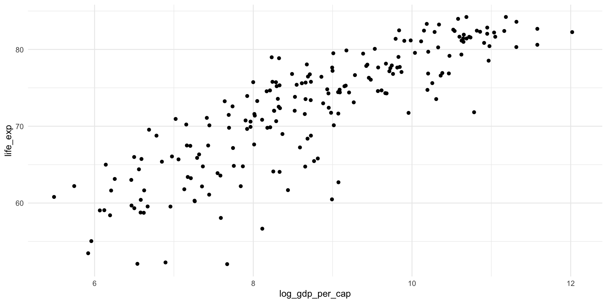
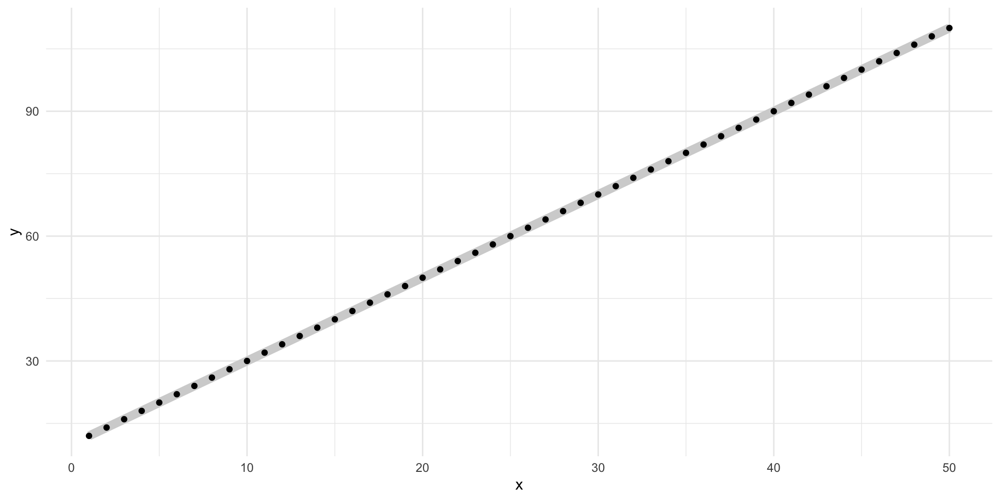
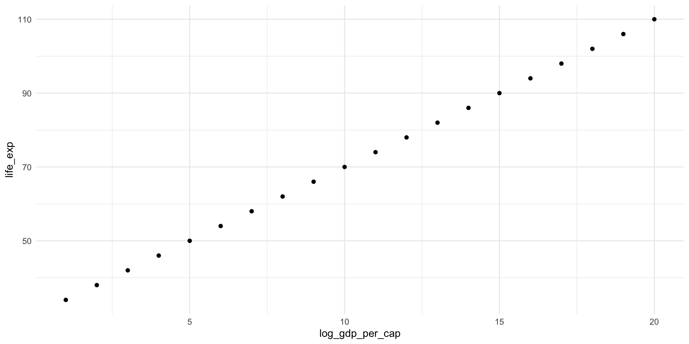
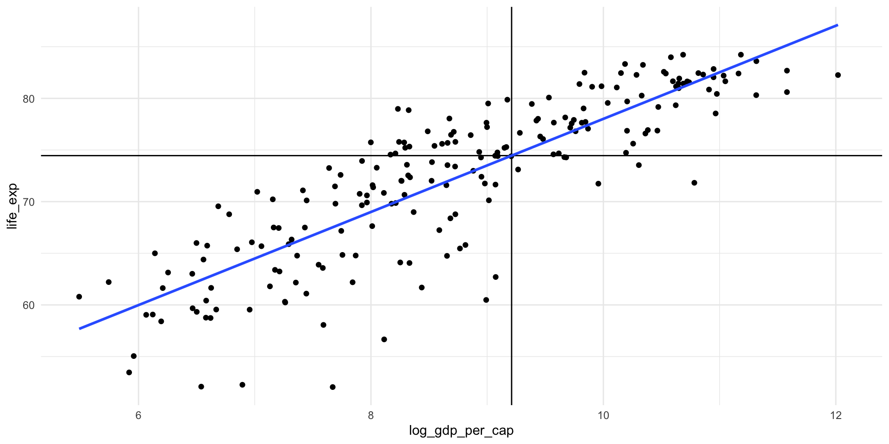
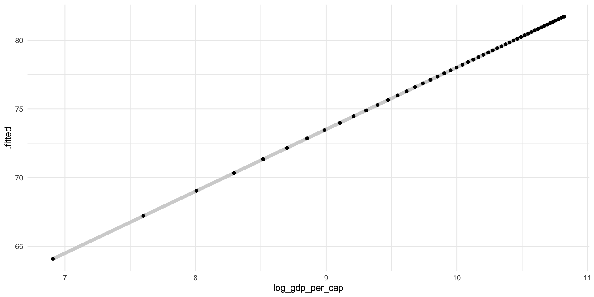
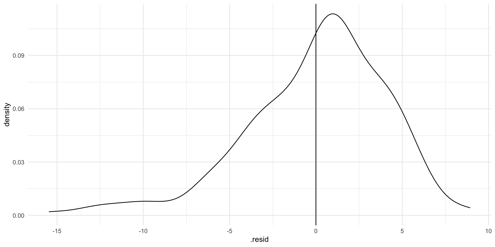
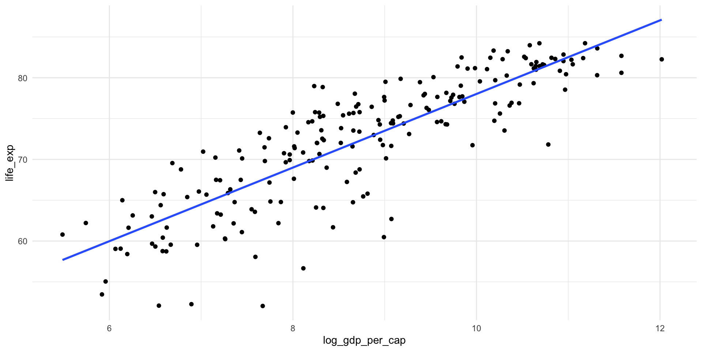

library(tidyverse)
library(wbstats)
library(poliscidata)
library(countrycode)
library(broom)
library(janitor)
library(ggridges)Bivariate Relationships
Readings
Class slides
Section
Prerequisites
Today, we will explore the relationship between wealth and health. This question was made popular by Hans Rosling’s Gapminder project.
First, we need to collect our data. We will use wbstats::wb_data() to pull these data directly from the World Bank.
gapminder_df <- wb_data(
indicator = c("SP.DYN.LE00.IN", "NY.GDP.PCAP.CD"),
start_date = 2016,
end_date = 2016
) |>
rename(
life_exp = SP.DYN.LE00.IN,
gdp_per_cap = NY.GDP.PCAP.CD
) |>
mutate(
log_gdp_per_cap = log(gdp_per_cap),
region = countrycode(country, "country.name", "region", custom_match = c("Turkiye" = "Europe & Central Asia"))
) |>
relocate(region, .after = country)
gapminder_df# A tibble: 217 × 8
iso2c iso3c country region date gdp_per_cap life_exp log_gdp_per_cap
<chr> <chr> <chr> <chr> <dbl> <dbl> <dbl> <dbl>
1 AW ABW Aruba Latin… 2016 28451. 75.6 10.3
2 AF AFG Afghanistan South… 2016 520. 63.1 6.25
3 AO AGO Angola Sub-S… 2016 1710. 61.1 7.44
4 AL ALB Albania Europ… 2016 4124. 78.9 8.32
5 AD AND Andorra Europ… 2016 39932. NA 10.6
6 AE ARE United Arab Em… Middl… 2016 41055. 79.3 10.6
7 AR ARG Argentina Latin… 2016 12790. 76.3 9.46
8 AM ARM Armenia Europ… 2016 3680. 74.7 8.21
9 AS ASM American Samoa East … 2016 13301. NA 9.50
10 AG ATG Antigua and Ba… Latin… 2016 15863. 78.2 9.67
# ℹ 207 more rowsVisualizing bivariate relationships: two continuous variables
ggplot(gapminder_df, aes(x = gdp_per_cap, y = life_exp)) +
geom_point() +
theme_minimal()
There seems to be a very strong case that there is a relationship between a country’s GDP per capita (wealth) and its average life expectancy (health).
Because we want to explore linear relationships at this stage of the course, we will look at the logged GDP per capita variable:
ggplot(gapminder_df, aes(x = log_gdp_per_cap, y = life_exp)) +
geom_point() +
theme_minimal()
I can imagine drawing a straight line between these points that roughly explains how they vary with each other. It appears that as a country’s logged GDP per capita increases, so too does the life expectancy for its population.
Correlations
We can measure the strength of this association using correlations. The correlation coefficient tells us how closely variables relate to one another. It tells us both the strength and direction of the association.
Strength: how closely are these values tied to one another. Measured from 0 to |1|, with values closer to 0 indicating a very weak relationship and values closer to |1| indicating a very strong relationship.
Direction: do both \(X\) and \(Y\) change in the same direction? Positive correlations show that when \(X\) increases (decreases), so too does \(Y\). Negative correlations show that when \(X\) increases (decreases), \(Y\) decreases (increases). In other words, the move in different directions.
What is the correlation between logged GDP per capita and life expectancy?
cor(gapminder_df$log_gdp_per_cap, gapminder_df$life_exp, use = "complete.obs")[1] 0.8475933As expected, the relationship is positive and strong.
Visualizing the linear relationship between two continuous variables
Let’s draw a line across all of these data points and try to understand how life expectancy increases with logged GDP per capita.
ggplot(gapminder_df, aes(x = log_gdp_per_cap, y = life_exp)) +
geom_point() +
theme_minimal()
We can, of course, draw many different lines across these points. Which is the best line to draw?
This course focuses on ordinary least squares (OLS) regression. Simply put, OLS regression draws the line that minimizes the distance between itself and all of the dots.
Let’s step through this. Look at the graph above.
Draw a line through those dots.
Calculate the distance between each dot and the line.
Sum up the absolute values of those distances. Remember, we just care about the distance, so we don’t need to worry about whether or not the dots are above or below the line.
Repeat steps 1 - 3 many, many, many times.
Pick the line with the smallest sum of distances.
Phew, this seems tedious and imprecise. Happily, maths and R are to the rescue. Here is the line that minimizes those distances (all with the addition of one extra line of code).
ggplot(gapminder_df, aes(x = log_gdp_per_cap, y = life_exp)) +
geom_point() +
geom_smooth(method = "lm", se = F) +
theme_minimal()
Estimating a linear model in R
How can we find this line? To answer this, we will first do some review.
Remember the general equation for a line:
\[ y = a + mx \]
Read this as: the value of \(y\) is the sum of some constant, \(a\), and some \(x\) variable that has been transformed by some slope value \(m\).
Remember that the slope constant, \(m\), tells you how much \(y\) changes for every one unit increase in \(x\).
So, if:
\[ y = 10 + 2x \]
Then, when \(x = 20\):
\[ y = 10 + 2*20 = 50 \]
For many values of \(x\):
ggplot(tibble(x = 1:50, y = 10 + 2*x), aes(x = x, y = y)) +
geom_line(colour = "lightgrey", size = 3) +
geom_point() +
theme_minimal()
Well, let’s substitute in our variables of interest. Our \(y\) variable is the life expectancy and our \(x\) variable is the logged GDP per capita.
\[ life Exp_x = \beta_0 + \beta_1 logGdpPerCap_x + \epsilon \]
Read this as: the life expectancy of some country, \(x\), is a function of some constant (\(\beta_0\)) and its logged GDP per capita transformed by some value \(\beta_1\) with some random error (\(\epsilon\)).
Let’s imagine that this relationship is accurately described by the following formula:
\[ life Exp_x = 30 + 4 * logGdpPerCap_x \]
We will get to that pesky error term in a bit.
Then, our model would predict the following average life expectancy for countries with log GDPs per capita between 0 and 20:
ggplot(
tibble(log_gdp_per_cap = 1:20, life_exp = 30 + 4*log_gdp_per_cap),
aes(x = log_gdp_per_cap, y = life_exp)
) +
geom_point() +
theme_minimal()
A country with a logged GDP per capita of 5 (the equivalent of a GDP per capita of $148.41) has a predicted average life expectancy of 50 years, or \(30 + 4*5\).
A country with a logged GDP per capita of 10 (the equivalent of a GDP per capita of $22,026.47) has a predicted average life expectancy of 70 years, or \(30 + 4*10\).
Does this accurately describe what we see in our data? What is the average life expectancy for countries with roughly $22,000 GDP per capita?
countries_10 <- gapminder_df |>
filter(gdp_per_cap > 21000 & gdp_per_cap < 23000)
countries_10# A tibble: 3 × 8
iso2c iso3c country region date gdp_per_cap life_exp log_gdp_per_cap
<chr> <chr> <chr> <chr> <dbl> <dbl> <dbl> <dbl>
1 BH BHR Bahrain Middl… 2016 22867. 79.6 10.0
2 KN KNA St. Kitts and N… Latin… 2016 21095. 71.7 9.96
3 SI SVN Slovenia Europ… 2016 21678. 81.2 9.98We predicted 70 years, but our data suggest that these countries have closer to an average of 77 years. Why do we have this difference?
Well, we probably haven’t produced the best model we can. We just picked those numbers out of thin air. We will find the OLS regression model shortly. We might get closer to the observed value with that model. Let’s see.
How do we calculate the constant (\(\beta_0\)) using OLS regression?
Remember, OLS regression simply finds the line that minimizes the distance between itself and all the data points.
It turns out that the constant that minimizes this distance is the mean of \(Y\) minus \(\beta_1\) times the mean of \(X\).
So, the constant that best predicts the life expectancy of a country based on its logged GDP per capita is equal to the average life expectancy across our sample minus the average logged GDP per capita transformed by \(\beta_1\).
So…
How do we calculate the coefficient \(\beta_1\)?
The regression slope is the correlation coefficient between \(X\) and \(Y\) multiplied by the standard deviation of \(Y\) divided by the standard deviation of \(X\).
Ew… Let’s step through that.
Remember, the correlation coefficient simply measures how \(X\) and \(Y\) change together. Does \(Y\) increase when \(X\) increases? How strong is this relationship?
The standard deviations of \(X\) and \(Y\) just measure how spread out they are.
Bringing these together, we are interested in how much \(X\) and \(Y\) change together moderated by how much they change independently.
Formally:
\[ \beta_1 = (\frac{\Sigma(\frac{x_i - \bar{x}}{s_X})(\frac{y_i - \bar{y}}{s_Y})}{n - 1})(\frac{s_Y}{s_X}) = \frac{\Sigma(x_i - \bar{x})(y_i - \bar{y})}{\Sigma(x_i - \bar{x})^2} \]
Happily R does all of this for us:
m <- lm(life_exp ~ log_gdp_per_cap, data = gapminder_df)
m
Call:
lm(formula = life_exp ~ log_gdp_per_cap, data = gapminder_df)
Coefficients:
(Intercept) log_gdp_per_cap
32.927 4.509 Okay, so the line of best fit describing the relationship between life expectancy and logged GDP per capita is:
\[ life Exp_x = 32.9 + 4.5 * logGdpPerCap_x + \epsilon \]
Prediction and performance
We can use this model to predict a country’s life expectancy given its GDP per capita.
broom::tidy(m) makes this model object a lot easier to work with.
tidy(m)# A tibble: 2 × 5
term estimate std.error statistic p.value
<chr> <dbl> <dbl> <dbl> <dbl>
1 (Intercept) 32.9 1.77 18.6 1.24e-45
2 log_gdp_per_cap 4.51 0.200 22.6 6.07e-57What is the life expectancy for a country with a GDP per capita of $10,000? First, let’s find the estimated constant (or intercept or \(\beta_0\)).
m_res <- tidy(m)
beta_0 <- m_res |>
filter(term == "(Intercept)") |>
pull(estimate)
beta_0[1] 32.92739Then we need to find the estimated coefficient for (logged) GDP per capita:
beta_1 <- m_res |>
filter(term == "log_gdp_per_cap") |>
pull(estimate)
beta_1[1] 4.508875Finally, we can plug this in to our model:
life_exp_10000 <- beta_0 + beta_1 * log(10000)
life_exp_10000[1] 74.45566A country with a GDP per capita of $10,000 is predicted to have an average life expectancy of 74 years. Does this make sense with our data?
ggplot(gapminder_df, aes(x = log_gdp_per_cap, y = life_exp)) +
geom_point() +
geom_vline(xintercept = log(10000)) +
geom_hline(yintercept = life_exp_10000) +
geom_smooth(method = "lm", se = F) +
theme_minimal()
We can predict values from a model using broom::augment():
augment(m, newdata = tibble(log_gdp_per_cap = log(10000)))# A tibble: 1 × 2
log_gdp_per_cap .fitted
<dbl> <dbl>
1 9.21 74.5We can do this across a number of different values for GDP per capita:
new_data <- tibble(
gdp_per_cap = seq(from = 1000, to = 50000, by = 1000),
log_gdp_per_cap = log(gdp_per_cap)
)
augment(m, newdata = new_data)# A tibble: 50 × 3
gdp_per_cap log_gdp_per_cap .fitted
<dbl> <dbl> <dbl>
1 1000 6.91 64.1
2 2000 7.60 67.2
3 3000 8.01 69.0
4 4000 8.29 70.3
5 5000 8.52 71.3
6 6000 8.70 72.2
7 7000 8.85 72.8
8 8000 8.99 73.4
9 9000 9.10 74.0
10 10000 9.21 74.5
# ℹ 40 more rowsLet’s look at that line:
ggplot(augment(m, newdata = new_data), aes(x = log_gdp_per_cap, y = .fitted)) +
geom_line(colour = "lightgrey", size = 2) +
geom_point() +
theme_minimal()
But how well does this model fit our observed data?
Let’s fit it with our observed values of each country’s logged GDP per capita, instead of the ones we provided above.
augment(m)# A tibble: 202 × 9
.rownames life_exp log_gdp_per_cap .fitted .resid .hat .sigma .cooksd
<chr> <dbl> <dbl> <dbl> <dbl> <dbl> <dbl> <dbl>
1 1 75.6 10.3 79.2 -3.55 0.0104 4.13 0.00395
2 2 63.1 6.25 61.1 2.01 0.0192 4.14 0.00237
3 3 61.1 7.44 66.5 -5.40 0.00879 4.12 0.00766
4 4 78.9 8.32 70.5 8.40 0.00533 4.09 0.0111
5 6 79.3 10.6 80.8 -1.49 0.0134 4.14 0.000893
6 7 76.3 9.46 75.6 0.743 0.00620 4.14 0.000102
7 8 74.7 8.21 69.9 4.72 0.00557 4.12 0.00368
8 10 78.2 9.67 76.5 1.62 0.00704 4.14 0.000548
9 11 82.4 10.8 81.7 0.748 0.0152 4.14 0.000257
10 12 81.6 10.7 81.3 0.373 0.0143 4.14 0.0000601
# ℹ 192 more rows
# ℹ 1 more variable: .std.resid <dbl>How did it do? What is the difference between what our model predicted and the country’s observed life expectancy?
Here, we have the predicted values for life expectancy for all of our countries in our sample. Compare .fitted (the predicted life expectancy) to life_exp (the actual observed average life expectancy).
m_eval <- augment(m) |>
transmute(
life_exp,
.fitted,
diff = life_exp - .fitted
)
m_eval# A tibble: 202 × 3
life_exp .fitted diff
<dbl> <dbl> <dbl>
1 75.6 79.2 -3.55
2 63.1 61.1 2.01
3 61.1 66.5 -5.40
4 78.9 70.5 8.40
5 79.3 80.8 -1.49
6 76.3 75.6 0.743
7 74.7 69.9 4.72
8 78.2 76.5 1.62
9 82.4 81.7 0.748
10 81.6 81.3 0.373
# ℹ 192 more rowsNote that broom::augment() already did this calculation and stored it in the .resid variable.
augment(m) |>
transmute(
life_exp,
.fitted,
diff = life_exp - .fitted,
.resid
)# A tibble: 202 × 4
life_exp .fitted diff .resid
<dbl> <dbl> <dbl> <dbl>
1 75.6 79.2 -3.55 -3.55
2 63.1 61.1 2.01 2.01
3 61.1 66.5 -5.40 -5.40
4 78.9 70.5 8.40 8.40
5 79.3 80.8 -1.49 -1.49
6 76.3 75.6 0.743 0.743
7 74.7 69.9 4.72 4.72
8 78.2 76.5 1.62 1.62
9 82.4 81.7 0.748 0.748
10 81.6 81.3 0.373 0.373
# ℹ 192 more rowsOkay, so there are some differences. Let’s look at those difference a bit more closely:
ggplot(augment(m), aes(x = .resid)) +
geom_density() +
geom_vline(xintercept = 0) +
theme_minimal()
If our model perfectly predicted each country’s life expectancy, we would see no difference between the predicted and observed values. There would just be a very tall straight line at 0 on the graph above.
Our model hasn’t predicted life expectancy perfectly. Whilst most predictions are within a couple of years of the country’s true life expectancy, there are some that are very different (up to 10 or 15 years!). Where the model has got it wrong, it has tended to overestimate life expectancy (note that the peak of the density curve sits above 0).
Can you see for which points these large differences exist?
ggplot(gapminder_df, aes(x = log_gdp_per_cap, y = life_exp)) +
geom_point() +
geom_smooth(method = "lm", se = F) +
theme_minimal()
What is causing these differences? A lot of your work as a political scientist is trying to answer this very question!
(Random) error
The world is a messy and complicated place. Things often vary in completely random ways. That’s okay! It means that your observational data are going to move in funny and random ways that you cannot capture. That’s okay too! As long as your model includes all those systematic drivers of the thing you are interested in measuring (such as life expectancy), we can accept a bit of random error.
In fact, we have already accounted for this. Remember that error term?
\[ life Exp_x = \beta_0 + \beta_1 logGdpPerCap_x + \epsilon \]
We run into issues when this isn’t the case. We will discuss this more in later classes.
Modelling relationships among categorical variables
Sometimes we want to know whether our outcome of interest changes based where our observation sits within a categorical variable. For example, do levels of support for abortion access differ between Democrats, Republicans, and Independents? Do the number of women elected to parliament change based on whether or not the country has a formal quota?
Let’s return to the American National Election Survey first explored last week. We will focus on that first question: do levels of support for abortion access differ between Democrats, Republicans, and Independents?
We can easily access the 2012 survey through R using the poliscidata package.
poliscidata::nesCross tabs
A simple cross tab can provide a nice summary of differences in your outcome of interest across your categories.
For example, let’s look at differences in the number of individuals who identified as Democrat, Republican, or Independent and whether they do not support access to abortions, support access with some conditions, with more conditions, or always.
tabyl(nes, abort4, pid_3) abort4 Dem Ind Rep NA_
Never 187 229 252 4
Some conds 499 583 519 6
More conds 332 337 227 2
Always 1325 964 381 10
<NA> 15 36 6 2We can visualise this:
Are these differences meaningful or significant? We will chat about that next week.